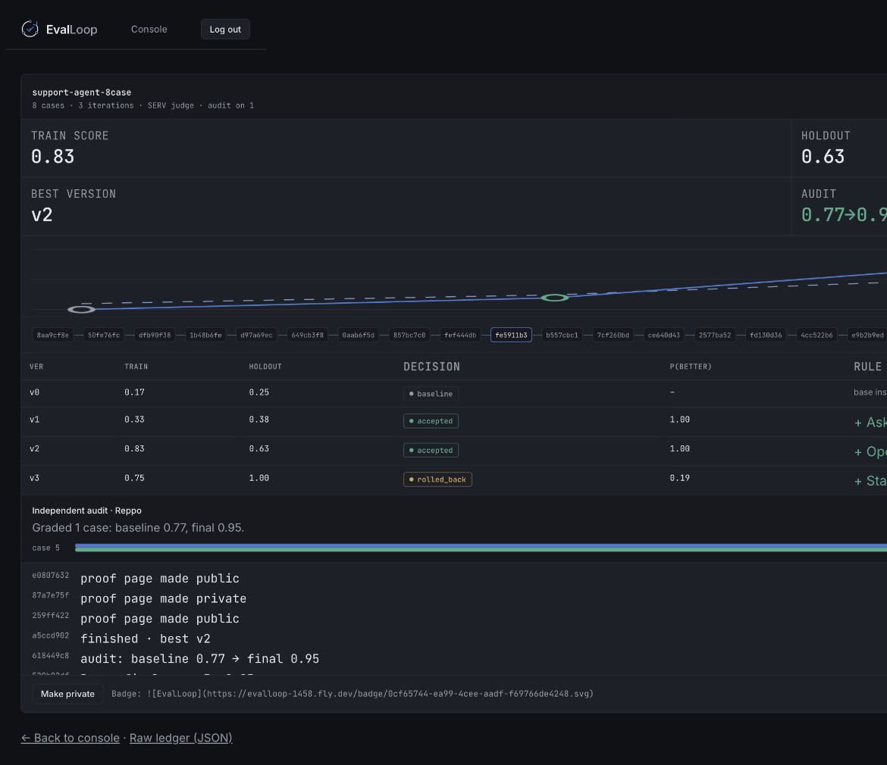

A safety check for AI agent prompt changes
EvalLoop improves an agent's instructions against a fixed test set, keeps a rule only if it statistically holds on cases the loop never trained on, then has Reppo audit the before and after independently. Every step is written to a hash-chained ledger anyone can verify.
support-agent-8case
8 test cases (6 training, 2 held out), 3 iterations. The agent started as just “You are a support agent.”
| Version | Train | Held-out | Decision | P(better) |
|---|---|---|---|---|
| v0 baseline | 0.17 | 0.25 | baseline | – |
| v1 | 0.33 | 0.38 | accepted | 1.00 |
| v2 | 0.83 | 0.63 | accepted | 1.00 |
| v3 | 0.75 | 1.00 | rolled back | 0.19 |
Independent audit (Reppo), one case: 0.77 → 0.95. The audit confirmed the direction. This is a demonstration, not a benchmark: 8 cases and one audited case.

The judge was wrong once, and EvalLoop said so
In an earlier one-case run, the SERV judge scored a change 0.25 → 0.75 while Reppo scored the same change 0.83 → 0.68. EvalLoop flagged “audit disagrees” instead of showing a green result. One grader, grading its own side's work, would have missed it.
Four steps, and a rollback
Your agent answers every test case.
A SERV Reasoning judge scores each answer against your rubric.
SERV proposes one rule. It is kept only if the gain holds on held-out cases, otherwise it rolls back.
Reppo grades baseline and final independently. Disagreement is flagged.
One file, no install
git clone https://github.com/Bencoy09/evalloop cd evalloop node evalloop.mjs --selftest # offline checks node evalloop.mjs --demo # sandbox server on http://localhost:8787
Needs Node 20 or newer. The README covers live mode with SERV and Reppo keys, the CI gate, and deployment.